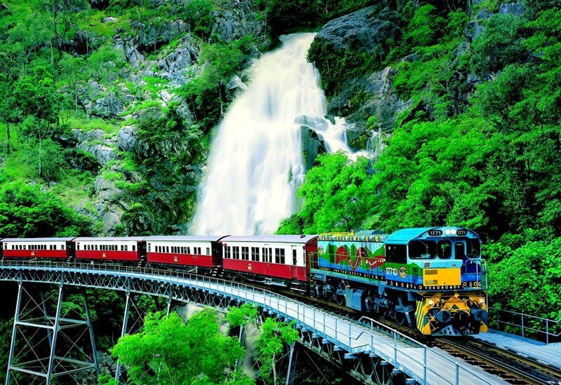
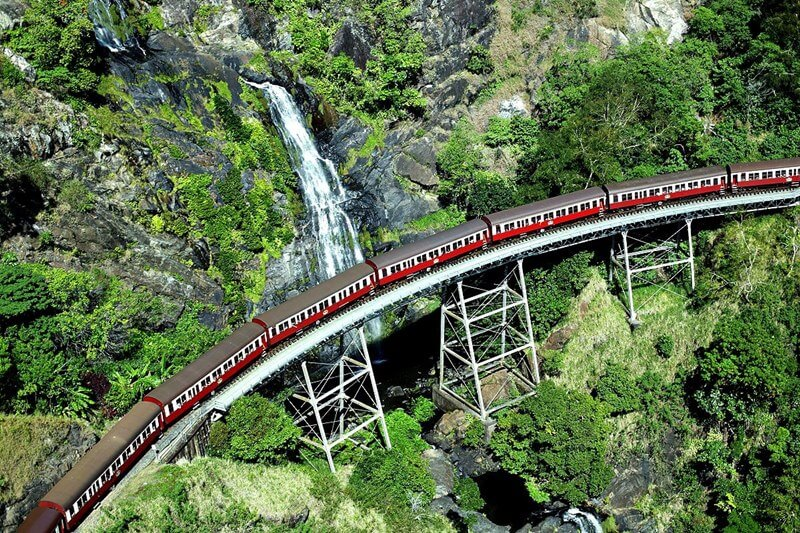
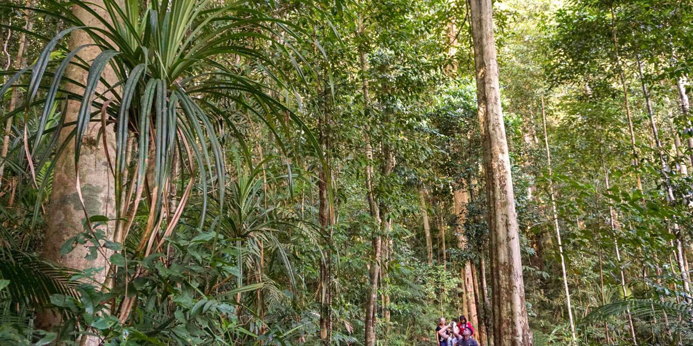
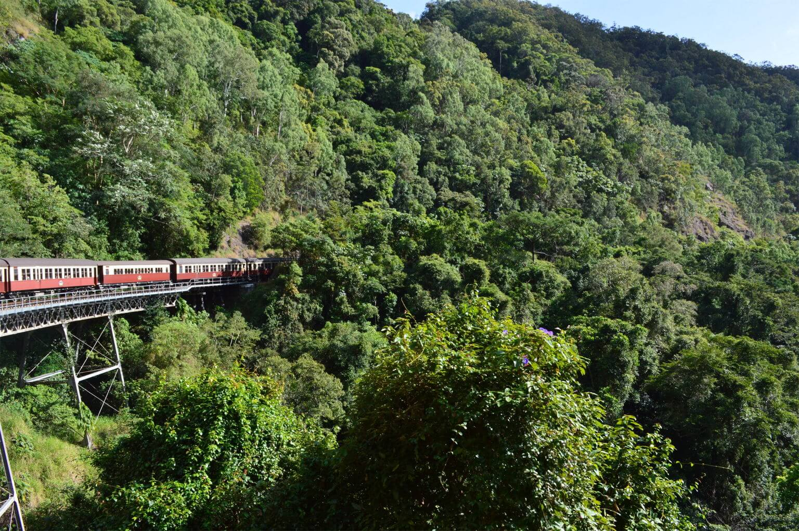
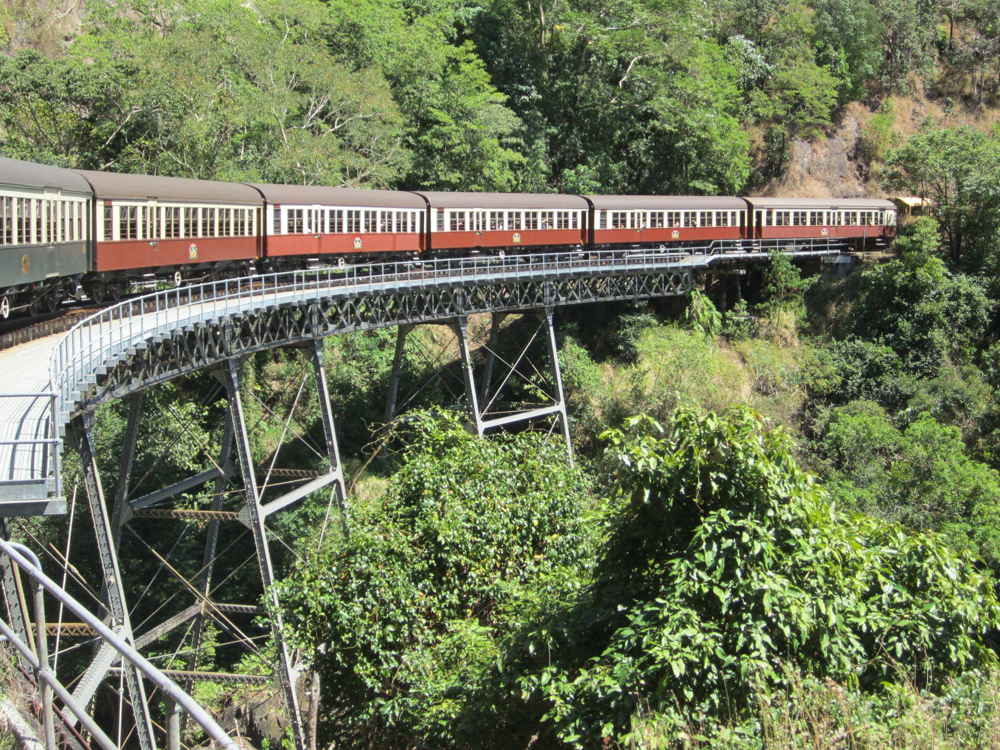
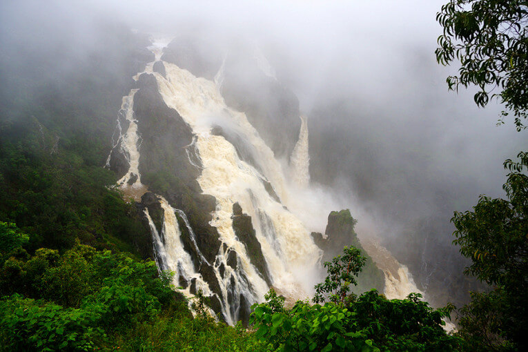
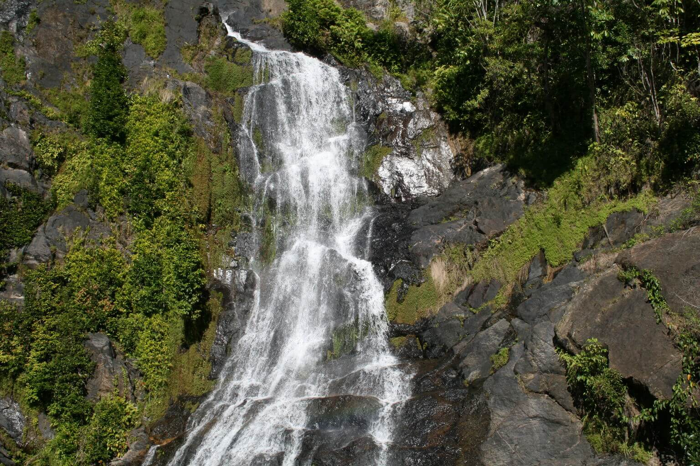
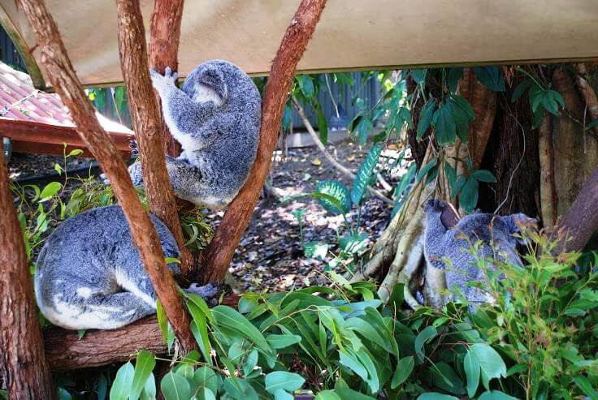
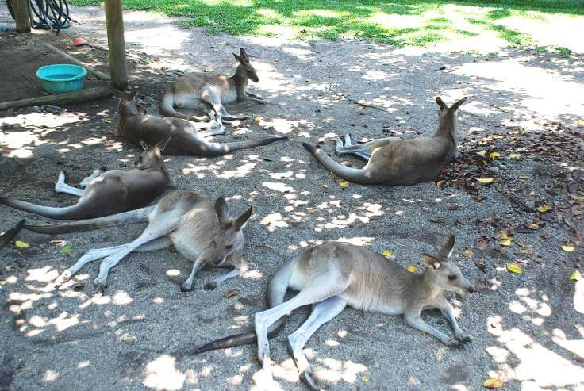
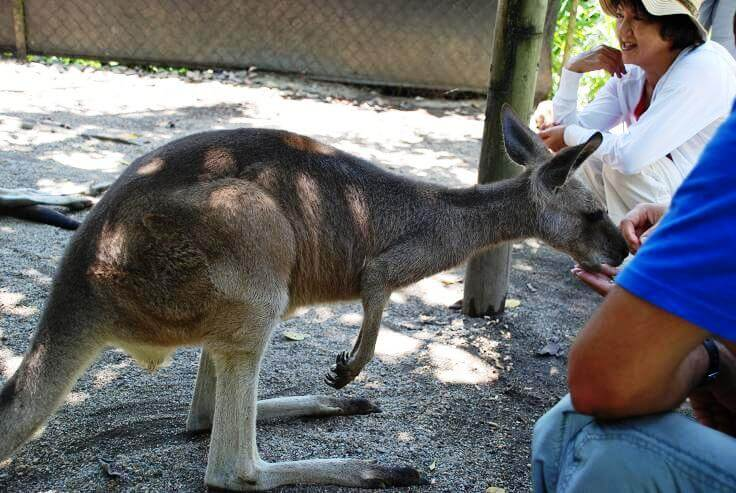

Расположенная в Австралии железная дорога Kuranda Scenic Railway является одновременно и невероятно опасной, и сказочно красивой.
Она была построена еще в конце 19 века и проходит через красивейший тропический лес, а часть железной дороги проложена по территории природного заповедника Баррон.

Уникальному тропическому лесу Северного Квинсленда 135 млн. лет, и многие растения, которые в других местах на Земле представлены только в виде окаменелостей, здесь растут до сих пор.
Здесь во влажной атмосфере австралийских тропиков живут более половины всех животных и разновидностей флоры этого материка, в том числе и птицы казуары.

Тропический лес находится всего в нескольких часах езды от Кернса. Добраться до него можно на поезде по уникальной железной дороге, проложенной сквозь гущу тропических джунглей.
На протяжении 10 тыс. лет эти места были домом для аборигенного племени Джабугай (Djabugay). Есть в Куранде и много интересного для любителей животных: заказник с коалами, заповедник бабочек, парк с птицами, зоопарк с дикими представителями семейства кошачьих и другими интересными экземплярами, и даже реабилитационный центр для летучих мышей.

Первые европейцы появились в этих местах только в XIX в. В 1887 г. здесь было начато строительство знаменитой железной дороги из Кэрнса в Майолу, а позднее в Хербертон, и уже в 1891 г. дорога прошла через Куранду. Первые 10 дней по ней ездили лишь товарные поезда, а затем движение открыли и для пассажиров. Нынешнее здание железнодорожной станции в Куранде было построено в 1915 г. На станции есть небольшой навес, на стенах которого рассказана история построения железной дороги.
Старинная горная железная дорога Kuranda Scenic Railway проходит на высоте 300 м по очень живописным местам дождевого тропического леса, через 15 тоннелей, 40 мостов, мимо водопадов и головокружительных обрывов. Часть ее проложена по территории Национального парка Ущелье Бэррон, являющегося частью знаменитого Национального парка Дэйнтри (Daintree), охраняемого ЮНЕСКО.

Во время поездки можно полюбоваться красивой экзотической растительностью, горными пейзажами и водопадами.

Около одного из них, водопада Бэррон (Barron Falls), поезд «Пыхтящий Билли» делает небольшую остановку на платформе, чтобы пассажиры могли полюбоваться каскадом воды высотой в 256 м.
Здесь можно прогуляться, cделать красивые фотографии и насладиться открывающимися видами.


Туристам Куранда предлагает познакомиться с местным животным миром.
Несчастные коалы дремлют на деревьях. Почему несчастные - потому что находятся в австралийском штате Квинсленд, где с коалами не запрещено фотографироваться. В других штатах это уже запретили.

Кенгуру отдыхают в тени. Их, как и крокодилов, можно попробовать в местных ресторанах. Вообще у австралийцев отношение к кенгуру примерно такое же, как у нас к коровам, и они с удовольствием поделятся с тобой рецептом, как вкуснее всего приготовить мясо кенгуру.

Ну а здесь на жизнь этих животных никто не покушается. Напротив, посетители их подкармливают, а благодарные кенгуру дают себя погладить.

ВВЕРХ